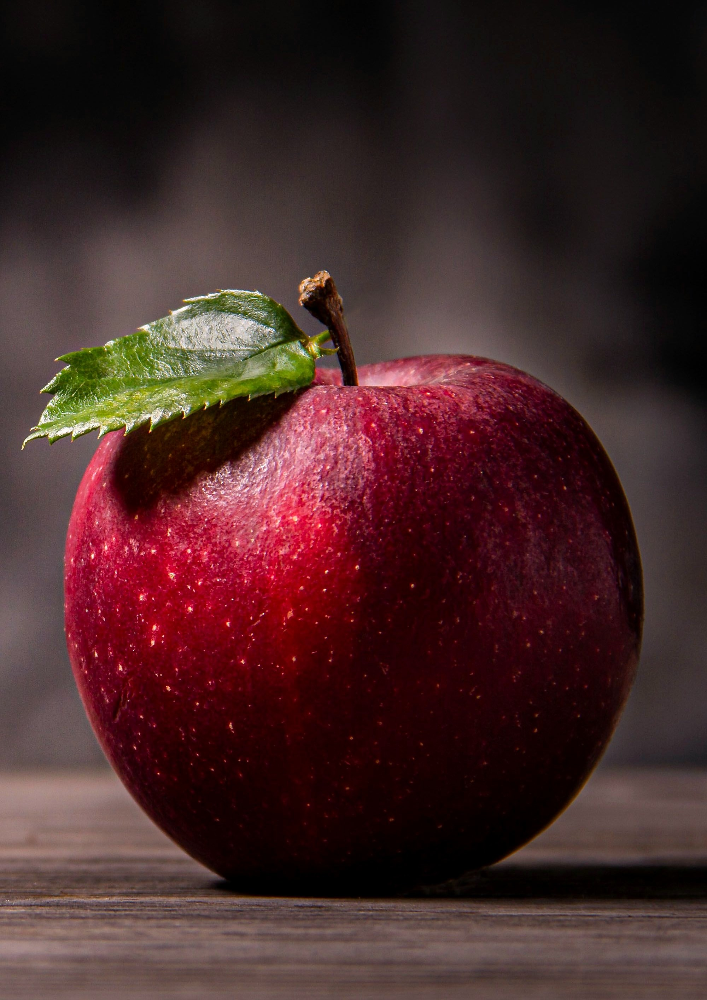
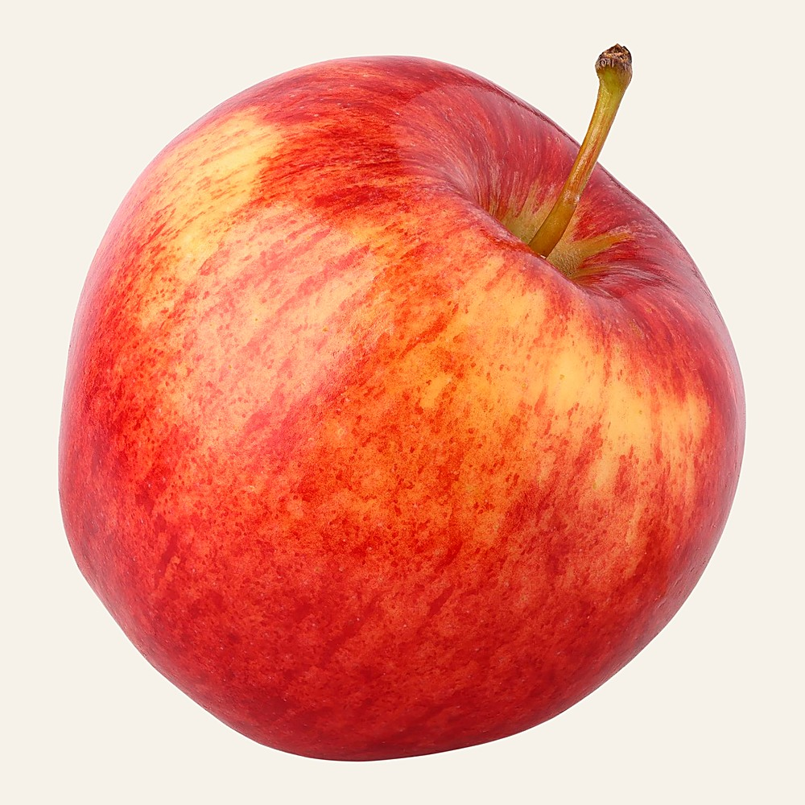
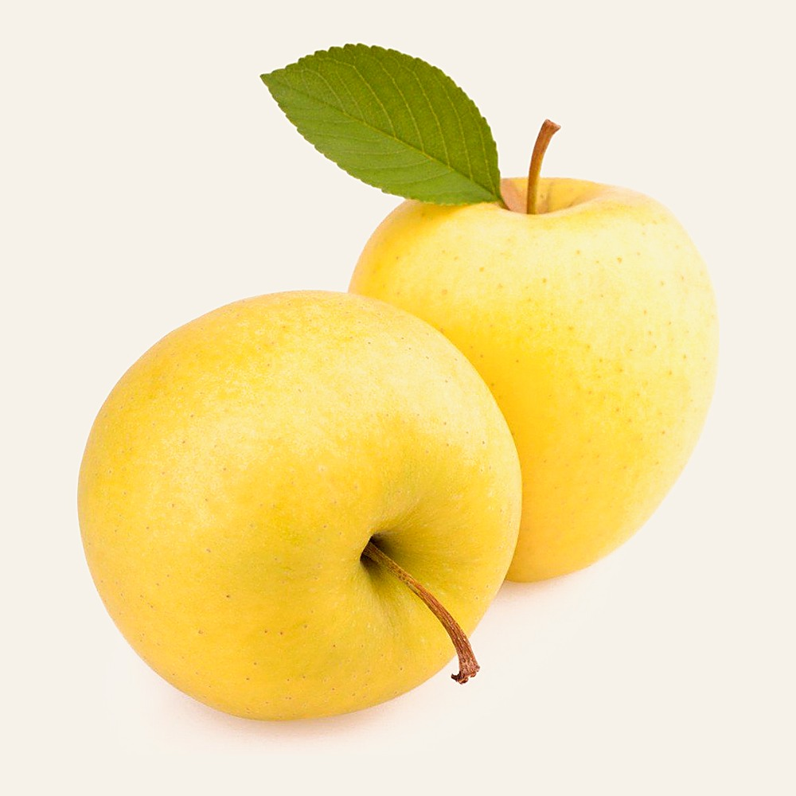
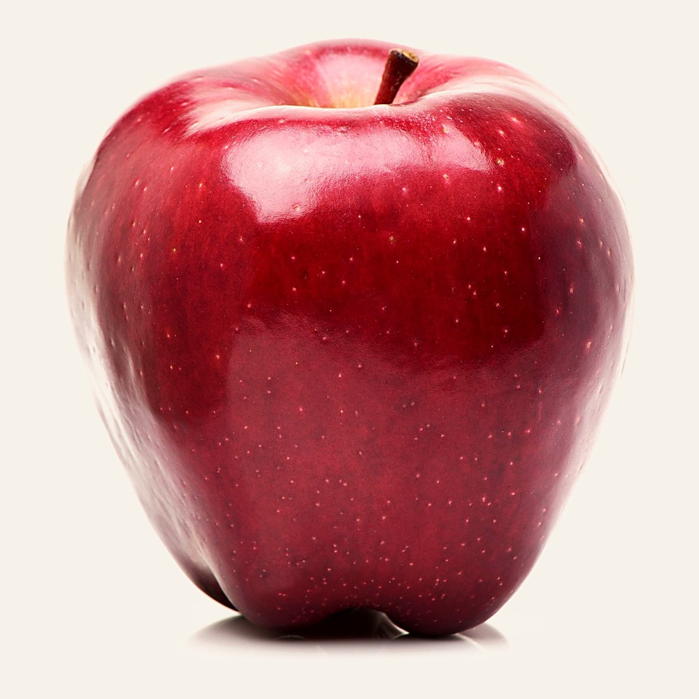
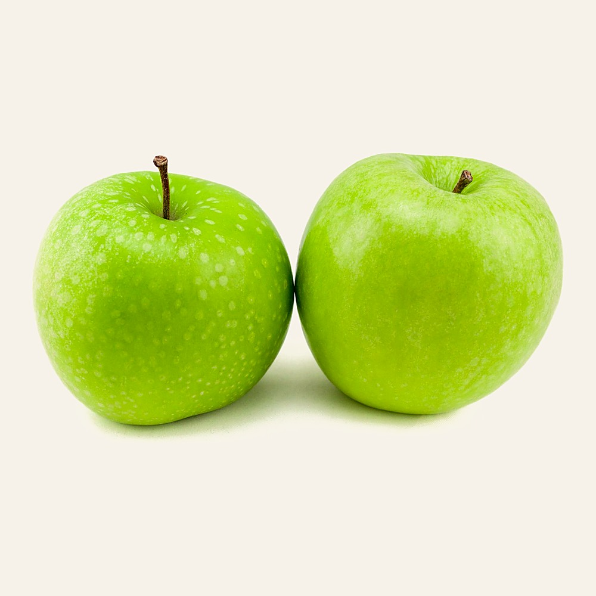
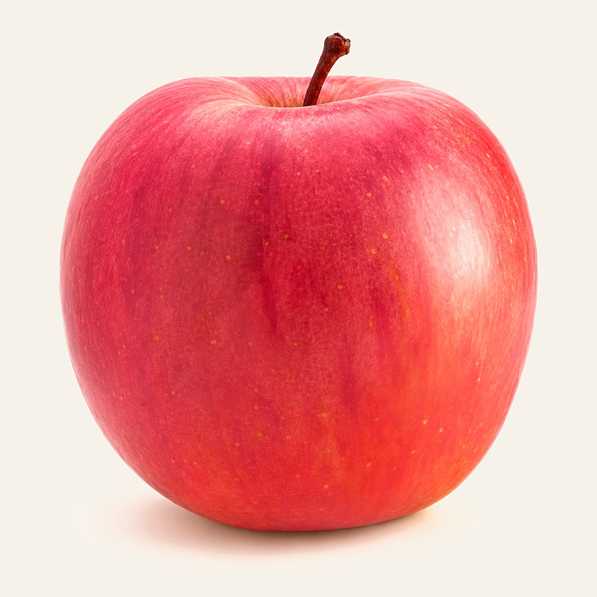
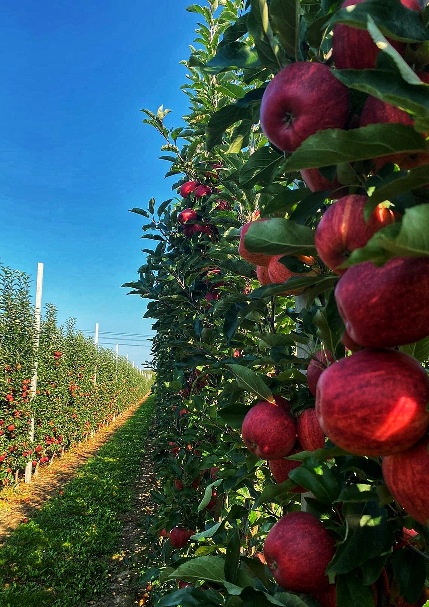

Gala · Golden Delicious · Red Delicious · Granny Smith · Fuji. Fresh whole fruit, specified and packed for the European Union market.
The commercial specification below is common to all five. What changes between them is colour, texture, sugar, firmness and — most usefully for planning — the week they come off the tree.
One sizing range across all five varieties.
Reported bands are 80–120 g and 130–180 g.
Extra, Class I and Class II — to be aligned with UNECE FFV-50.
At approximately −1 to +4 °C and 90–95 % RH.
Figures are drawn from Iranian commercial export specifications and published Iranian research. They are indicative commercial benchmarks for catalogue purposes, not guaranteed values for every orchard or lot. Firmness and soluble solids are variety- and maturity-dependent.
Colour coverage is a specification field, not a description — it is what a buyer's inspector checks first. Each variety is shown whole, so shape reads as well as colour.

Bright red stripes over a pale green-cream ground. Conical to oblong, fine-grained and crisp.

Light green to very pale yellow, dry skin. Elongated and tapering, sweet and aromatic.

Dark to striped red, the deepest colour of the five. Round to round-conical, tender and juicy.

Bright green, smooth skin. Elongated, the firmest and most acidic of the five.

Pinkish-red blush over green, yellow flesh. Slightly elongated, flattened at base and apex.
Gala and Red Delicious are not interchangeable: > 60 % striped against > 80 % solid, and a different flesh and bite.
Golden Delicious is sweet and aromatic; Granny Smith is acidic and markedly firmer. Different programmes.
Blush rather than stripe, and the highest sugar benchmark of the five at ≥ 14.0 °Brix.
Colour, appearance and sensory characteristics are taken from an Iranian commercial specification. Photography of Fuji as a single fruit is outstanding; the frame shown is packed export fruit.
Roughly ten weeks separate the first Gala from the last Granny Smith. That sequence, plus storage, is what turns five varieties into a programme rather than five separate purchases.
A buyer taking Gala in September and Granny Smith in November holds one supplier and one specification across the autumn.
Stored availability extends supply from autumn into spring — 2 to 7 months, depending on variety and handling.
Harvest dates shift year to year with the season. We commit to dates we can hold, not to the calendar.
Harvest windows are approximate, from Iranian commercial sources. Stored availability is shown indicatively at six months from the end of harvest; the underlying source states 2–7 months depending on variety and handling, and does not publish a per-variety storage figure.
The solid bar is harvest. The thin bar is availability from controlled storage, drawn at six months from the end of harvest — indicative only, because the source gives a single range across all five varieties.
Brix benchmark ≥ 12.0 °
Firmness 5.8 – 6.0 kg, 11-mm plunger.
A separate Iranian study of Gala reported TSS around 14.6 ± 0.6 °Brix — which is why this catalogue gives a benchmark rather than a promised value.
Late August → early September
The first of the five off the tree.
Stored availability extends through autumn into spring, subject to the storage programme.
Brix benchmark ≥ 12.8 °
Firmness 5.8 – 6.0 kg, 11-mm plunger.
The highest sugar benchmark of the three mid-season varieties.
Mid / late September → October
Stored availability can extend significantly beyond harvest depending on storage conditions.
≈ 12 – 13 °Brix at commercial maturity
Firmness 5.8 – 6.0 kg, 11-mm plunger.
An Iranian post-harvest study selected commercially mature fruit at approximately 12–13 °Brix and 80–90 % red surface coverage — a range, not a single value.
Late September → mid / late October
Iranian commercial sources show Red Delicious in the stored export calendar through winter and into spring.
Brix benchmark ≥ 11.0 °
Firmness 6.3 – 6.5 kg, 11-mm plunger.
The lowest sugar and the highest firmness of the five — the combination that makes it the long-storage and processing variety.
Late October → November
The latest of the five.
Closes the Iranian autumn programme and carries supply furthest into the following year.
Brix benchmark ≥ 14.0 °
Firmness 5.6 – 5.8 kg, 11-mm plunger.
The highest sugar benchmark and the softest firmness benchmark of the five.
Mid / late September → early October
Iranian commercial data places Fuji after Gala, around the same general period as the other mid / late autumn varieties.
Five varieties sourced, graded and shipped to a single specification — so a buyer holds one supplier across the whole Iranian autumn.
These are benchmarks, not guarantees. They exist so a buyer can see how the varieties differ from each other — which is the question the numbers can actually answer.
A solid mark is the benchmark minimum; the tint to its right is “at or above”. Red Delicious is given as a measured range. The grey mark on Gala is the 14.6 °Brix reported by a separate Iranian study — evidence that one fixed value would be a promise we could not keep.
Measured with an 11-mm plunger. Granny Smith stands clearly apart at 6.3–6.5 kg; Fuji is the softest of the five. Firmness is variety- and maturity-dependent and is confirmed per lot.
Sugar and firmness move with orchard, season and harvest date. A single promised number would fail on some lots and mislead on the rest.
Final acceptance limits are agreed with the buyer against the storage programme and destination, then measured per lot.
Fuji at ≥14 °Brix and Granny Smith at ≥11 °Brix are three full points apart. They are not substitutes for each other.
Benchmarks combine Iranian commercial specifications with published Iranian research and should be treated as indicative, not as guaranteed values for every orchard or lot.
Rather than invent a separate calibre scale per variety, the catalogue uses a single commercial sizing table across the range — which is how the fruit is actually sorted.
The Iranian source publishes the overall 65–100 mm range and the common weight bands, but does not publish a weight for each calibre. The diameter-to-weight conversions above must be confirmed against PAYA ORIGIN's own sorting data before this becomes a product commitment.
UNECE FFV-50 permits sizing by diameter or by weight and sets limits on uniformity within a package. For fruit packed in rows and layers, the difference in diameter must not exceed 5 mm; the standard sets corresponding bands and tolerances for weight-based sizing.
Calibre and class are declared per shipment on the carton label, together with net weight and fruit count. Where a consignment mixes sizes, the declaration follows the pack.
Class describes presentation. Everything on this list applies to all three classes — it is the floor, not the grade.
Premium presentation, with stricter appearance requirements than the classes below.
Good commercial quality, with permitted minor defects within the applicable standard tolerances.
Meets minimum market requirements and the applicable tolerances. Sound fruit, correctly declared.
For the European Union market these class definitions must be reconciled with UNECE FFV-50 — the marketing standard for apples, listed by UNECE as FFV-50 with a revised 2020 edition — before this catalogue is issued to buyers.

From the first Gala in late August to the last Granny Smith in November, the Iranian apple season runs as one continuous programme.
The 10 kg carton is the standard Iranian export pack. Everything above and below it is built to the buyer's requirement.
Loose packed. The standard Iranian export format, reported across commercial sources.
Tray or layer packing, or customer-specific. Plastic boxes at 8.5 and 13.5 kg are also reported by Iranian exporters.
Retail carton, bag, tray or consumer pack to the customer's specification and artwork.
The packed photography on file carries another company's labels on every fruit. Rather than put a competitor's brand into a PAYA ORIGIN catalogue, the three formats are drawn and one sticker-free carton is shown. A short packing-line session would replace all three drawings with real photographs of PAYA's own pack.
Packaging formats are reported by Iranian commercial exporters. Final carton dimensions, board grade and artwork are agreed with the buyer and approved before the first carton is printed.
Pallet configuration follows the carton, and the container count follows the pallet. None of the three can be quoted before the first is fixed.
Alternative pallet formats may be used according to destination or customer requirement. Pallet treatment and marking comply with applicable international requirements.
Dimensions and board grade are agreed with the buyer; the pallet plan is derived from them.
Cartons per layer and layers per pallet, chosen for stability and airflow together.
Total cartons and net and gross weight per container, reconciled against the payload limit.
Storage life for Iranian apples is reported at 2–7 months depending on variety and handling. Which end of that range a lot reaches is decided before it goes into store, not after.
Variety, harvest maturity, speed into pre-cooling, storage temperature and humidity stability, and whether the chain is broken at any hand-off.
Temperature recording through storage and transit is recommended and is provided where the buyer requires it. A cold-chain record is part of the shipment documentation set.
The firmest and most acidic of the five, harvested last. The variety that carries supply furthest into the following year.
Shown by Iranian commercial sources in the stored export calendar through winter and into spring.
Earlier and softer at the benchmark. Planned closer to harvest rather than held to the end of the range.
The source gives 2–7 months across all five and does not publish a figure per variety. The placement above follows harvest order and firmness, and is a planning guide rather than a stated storage life.
What follows applies to every variety and every shipment, which is why it is set out once here rather than repeated on five variety pages.
Met per shipment and per destination, with the required certificate accompanying the consignment.
Full compliance, supported by accredited laboratory residue analysis.
Where applicable to the production base.
BRCGS, IFS or FSSC 22000, according to buyer requirements, on a HACCP-based food-safety system.
Additional certificates and declarations as the buyer's programme requires.
Certification held is named explicitly per shipment. Where a buyer's programme requires a certificate we do not hold, we say so before contracting rather than after inspection.
The page to send when a buyer asks for the specification and does not want a twenty-page document.
* Common to all five varieties: storage duration, temperature and humidity are reported as a single commercial range, with the source stating that storage life varies by variety and handling. Brix and firmness are indicative benchmarks, not guaranteed values. Diameter-to-weight conversions and class definitions remain to be confirmed against PAYA ORIGIN sorting data and UNECE FFV-50.
This catalogue is a commercial summary built on Iranian commercial export specifications and published Iranian research. Before issue to buyers, three items are to be confirmed: the diameter-to-weight sizing table against PAYA ORIGIN's own sorting data, the class definitions against UNECE FFV-50, and the per-variety storage figures.
sale@payaorigin.com
+98 912 410 7606
Valiasr Street
Tehran, Iran